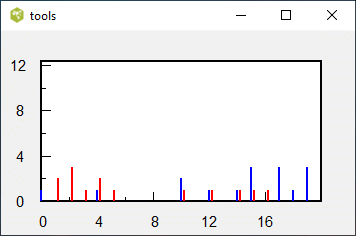
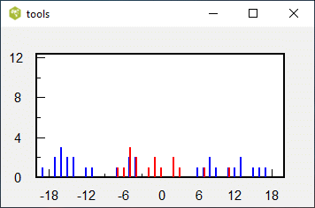
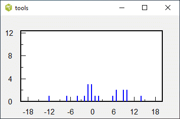
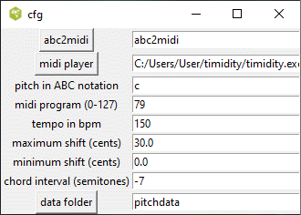

Good pitch discrimination is an important asset for any person planning to be a music performer. String instruments which are temperature and humidity sensitive need to retuned frequently. Fortunately there are now tuning meters for people like me who have trouble determining whether the note is tuned too low or high.
This program provides six different methods for measuring one's ability to detect small pitch differences. The program is configurable and can run on either the Windows or the Linux operating systems. However, the program in its present state requires some knowledge of abc music notation, the midi standard, tcl/tk, and the computer file system.
This program was put together rather quickly in order to test out various ideas. To use this program you will need Tcl/Tk 8.5 or 8.6 installed on your system, a midi player that can run invisibly, and the executable abc2midi. There are numerous configuration options.
The program runs in the following manner. Each time the user clicks on a button, the program generates a test abc file, executes abc2midi to convert it into a midi file, and then forwards the file to a midi player. The user responds by selecting the tone that is different, or indicating whether a particular tone is higher or lower relative to another tone. Despite the complexity of the program, it runs sufficiently fast to be interactive. Six exercises are included in the program. The results of these exercises are stored in separate data files in a folder chosen by the user.
The frequency of a note doubles in each octave. For example, the note A in the lower octave is 220 Hz, 440 Hz in the middle octave, then to 880 Hz in the next octave. An octave is divided into 12 semitones where each semitone rises in frequency by a constant factor equal to the 12th root of two or 1.059460943. Most people can detect pitch difference smaller than a semitone. Here we use pitch differences measured in cents where each semitone is divided into 100 equal parts or cents.

This is a histogram of the correct (blue) and wrong (red) responses as a function of the pitch differences. Most of the red responses concentrate at the smaller pitch differences (in cents). The program continues to accumulate the results until you delete the highlow.dat file. By default this file is found in the folder called pitchdata. This file (if it exists) is read each time the program is started and is replaced on exiting the program. The chord high/low exercise is almost identical to the high/low exercise. The difference is that the test tones are now embedded in two-tone chords -- the same test tones and harmonizing tones. The second tone is above or below the test tone by a fixed number of semitones which is set in the configuration page. The question is whether it is easier or harder to detect the higher test tones in this environment. The results are stored in a file called chordhighlow.dat.

The horizontal scale indicates pitch differences (positive or negative) of the distinct tone. The number of correct responses and wrong responses are indicated in blue and red respectively for each pitch difference.

There is no right or wrong so that all the counts are in blue. The counts should concentrate near zero if you tune the notes correctly. All the results are stored in the file tuning.dat.

The abc2midi entry box points to the executable abc2midi. The midi player entry box points to the midi player executable. I find timidity works best on both Linux and Windows; however, timidity requires a SoundFont file and a configuration file timidity.cfg indicating where to find the SoundFont. You can use the abc2midi and midi player buttons to navigate to these executables.
pitch in ABC notation It sets the pitch of the test tone
to be played in all the exercises. The pitch is specified using the
abc music notation standard. Here are some examples:
C Middle C
c One octave above middle C
c' Two octaves above middle C
C, One octave below middle C
_B B flat
^F F sharp
midi program (0 -127) Note that not all midi programs are suitable. The tone of some instruments may decay too fast, especially in the high registers. Other instruments may have too much vibrato or tremolo. Ensemble programs are too rich. The following instruments (midi program numbers) are recommend: Brass (56-63), Reed (64-71), Pipe (72-79), and Synth Lead (80-87).
tempo beats per minute. Controls the duration of the tone sequence usually consisting of 4 beat tones.
maximum shift (cents) and minimum shift controls the range of pitch shifts selected by the random number generator. I recommend a range from 0 to 25. The plots go up to 25 presently.
chord interval (semitones) For the exercises chord high/low and chord odd one out, this parameter determines the pitch of the chordal tone which is played either above or below the test tone.
data folder This is the folder where the data files highlow.dat, oddout.dat and tuning.dat. By default it is pitchdata; however, if you want to save the results for different configurations (eg. different pitch, or different midi program), or different users, you can use different names.
I do not recommend changing the configuration values while you are collecting data. It will confound the results. Either delete the data files, or switch to another folder.
The configuration variables are stored in a separate initialization file in the same location as this program.
X:1 T: pitch discrim M: 4/4 L: 1/4 K: C Q: 1/4 = $tempo %%MIDI program $prog $note z |$shift$note|The variables tempo, prog, note, and shift are set by the program and are substituted into the file to create an abc file tmp.abc. A simple procedure out_and_play(abcfile) converts the abc file to a midi file and sends it to the midi player. Here is the procedure coded in tcl/tk scripting language.
proc out_and_play {abcfile} {
global midi
set outhandle [open tmp.abc w]
puts $outhandle $abcfile
close $outhandle
set cmd1 "exec $midi(abc2midi) tmp.abc"
catch {eval $cmd1} out1
set cmd2 "exec $midi(midiplayer) tmp1.mid "
catch {eval $cmd2} out2
}
There are two functions in the tools menu for exposing the operation of this program. tools/tmp.abc will display the contents of the tmp.abc file for the current trial in a separate window. tools/console shows the communication between this program with the external executables. The console is useful for diagnosing problems with the program or configurations.